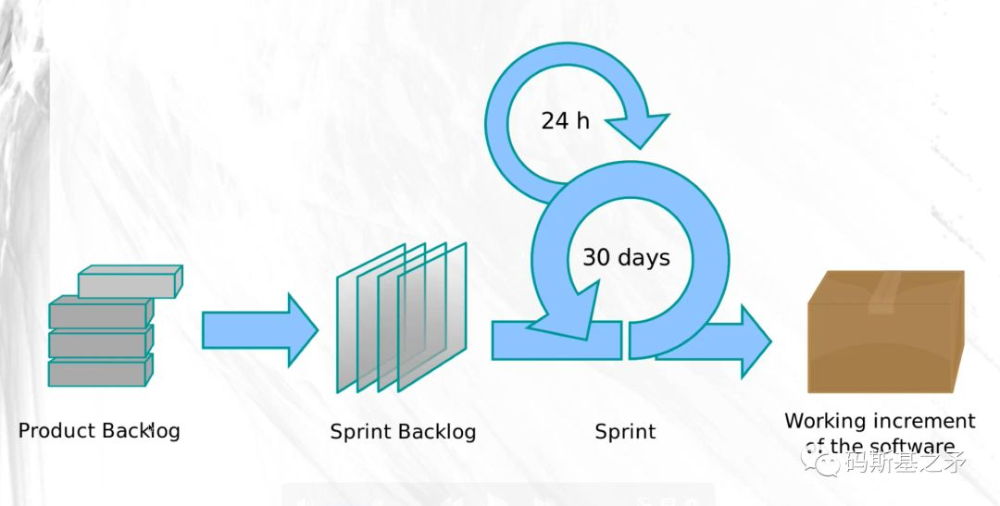

第14讲 敏捷 Scrum 与团队角色，也谈敏捷的工程中心主义
📺 配套视频：第3部分：敏捷中的 Scrum 与团队角色 · Bilibili 囧森Jonshon

题图来自网络，版权归原作者所有
所谓敏捷研发的工程中心主义，即指在软件研发中以技术工程师为主导、来制定产品计划、迭代计划，产品/需求等与开发工作统一纳入敏捷管理框架之内。
论起渊源，敏捷开发宣言，肇始于一群叛逆的程序员，敏捷方法最初也更多为了服务于软件开发。这也成了硅谷等互联网/软件产业繁荣之地“工程师文化”兴盛的由来。
“主导”意味着在团队内的Power（权力）。依人类（组织结构心理）目前的进化程度，还远没有达到一个团队可以在没有Leader的情况下完全靠自组织、自驱动而运作得很好的（这就是“官本位”）。团队里，人们总希望有一个Leader的管理角色，来规划与统领全局。
一个产品经理，如果有较强的产品能力、有技术背景、深谙敏捷管理之道，对商业与市场有很强的感觉，那这个人将是团队Leader的不二人选；一个技术工程师，若具备扎实的技术功底与技术规划能力、手到擒来的敏捷能力，对产品与市场也有自己敏锐的洞见，这个人也同样适合Leader。
从长期匹配度而言，团队是技术主导、还是产品主导，由Leader本身的能力结构与能力强度决定，这是一种衍生的自然权威。
但敏捷方法中理想的管理模式应该是：
拆分管理者的角色，把原本属于一个管理者的职责，分给3个人。其中，“产品负责人”(Product Owner)主管产品，负责产品开发相关的具体事务。“人事领导”主管人，给团队里的每个人做职业规划和指导。“敏捷教练”(Scrum Master)主管流程，关注团队的任务和目标，给成员及时提供支持和指导，充当团队的润滑剂。这三个角色彼此互补。得到：如何应对“反升迁”趋势？
对敏捷/Scrum一知半解的大部分国内团队，软件研发中的产品/需求分析工作，常常独立于用户故事（User Story）的需求管理体系之外：产品经理自己独立写PRD（需求分析说明书）、画线框图，按自己的方式规划产品工作任务，然后输出一些文档给工程师团队。 推崇敏捷方法的工程师则希望产品迭代、发布计划等，一同纳入敏捷迭代里进行管理，这样才能真正敏捷。在迭代进行中，工程师自然而然就开始掌握了主导权，因为对细节的深入才有望真正理解问题，而工程师还掌握着问题解决的最有效武器（技术）。
但产品经理（或业务分析师们）不一定认同或愿意这样，因为这就等于丧失了Power。这也就是很多国内产品经理不懂敏捷或不愿意推行敏捷、不愿意跟工程师一起走敏捷迭代的根源，除非他是团队的Leader。
举两个例子：
类似Tower.im这样的项目协作工具，其研发过程就是典型的产品与开发迭代分离的过程。从团队的公开发文了解到，团队在构建这个产品的过程中是产品及设计人员占主导（这本是一家UI设计起家的公司）、或至少产品与工程开发是平行独立的。再观其产品本身，你只能用它来规划开发迭代（Sprint），并不便于进行Release（产品版本）的计划。（说明：此处仅为说明问题而举例）
这与“大环境”的做事方式也是一致的，毕竟“我们”一直是业务驱动、业务中心的。
同样作为项目协作工具，早期的Scrumworks等，工程中心主义则更明显。其产品功能基础是：整个产品功能的规划、发布计划(Release Plan)都纳入了Product Backlog（功能待办清单），分成多个Release，一个Release则可能分割成多个迭代（Sprint）。这要求产品经理以用户故事来规划和管理需求。
我曾负责过的项目，产品经理与工程师不配合的情况那也是有的：产品经理希望按自己的方式整理产品需求、定义工作计划，不愿意参与到Scrum流程中来。但工程师们觉得，没有产品经理参与、Scrum没法更好地运转，矛盾由此产生。为此还花了不少时间、心力去解决。